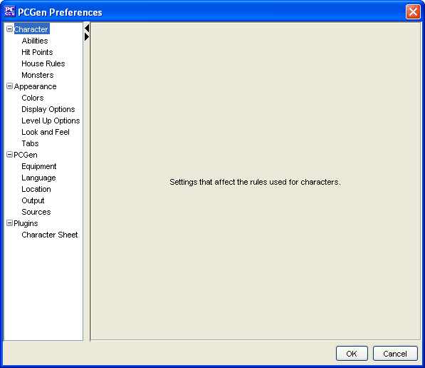

The Preferences Menu is a dialog box. It contains a list of sections that help customize PCGen for the user. The options that are listed here can help change the way PCGen looks, the language used in PCGen, the location of the sources, as well as many other customizable features
The 4 main sections are:
